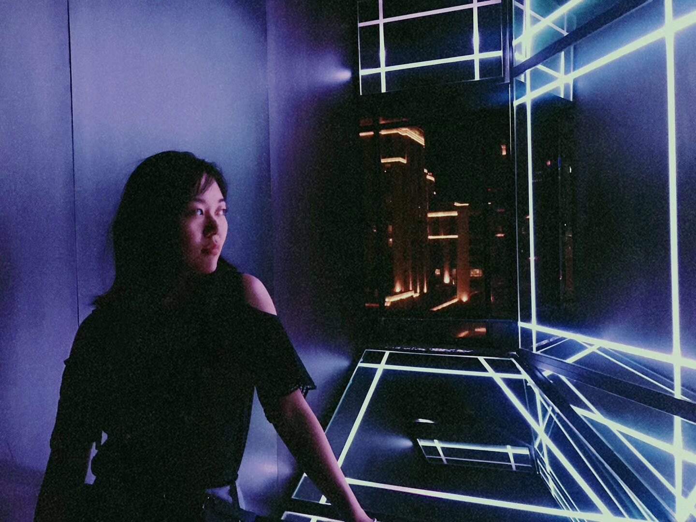

Welcome!

I'm a 2nd year Master student studying at University of Southern California. I'm motivated by the question - how can state-of-the-art technology, especially the intelligent system, can benifit our healthcare system and daily life.
Currently, it's my pleasure to work with Dr. Yolanda Gil and Dr. Neda Jahanshad. Our group, NeuroDISK, is exploring on how to analyze neuroscience data automatically with help of WINGS and DISK systems. I was also fortunate to be advised by Dr. Stefanos Nikolaids and Hejia Zhang in ICAROS LAB of USC. In ICAROS, we focused on the work of human robot collaboration, especially task and motion planning.